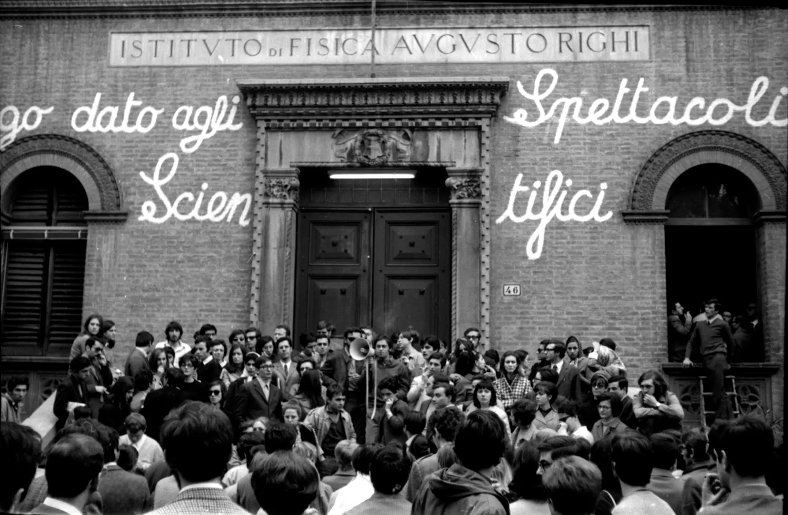

Fotografia
Fotografia di Luciano Nicolini scattata nel febbraio 1968 in Via Irnerio 46 a Bologna, che documenta la protesta e l'occupazione dell'Istituto di Fisica "A. Righi" da parte degli studenti a partire dal 14 febbraio. L'agitazione a Fisica continuerà fino all'inizio di maggio, provocando tra l'altro le dimissioni del rettore Felice Battaglia.
| Titolo | L'occupazione dell'Istituto di Fisica "A. Righi" |
|---|---|
| Autore | Luciano Nicolini |
| Data | Febbraio 1968 |
| Tipo | Fotografia (StillImage) |
| Temi | Movimento studentesco , Occupazione |
| Luogo | Via Irnerio 46, Bologna |
| Fonte | Archivio Storico dell'Università di Bologna (Raccolta Luciano Nicolini) |
| Identificativo | DOC_004 |
L'intero archivio è disponibile in formati aperti per il riuso e la ricerca.
Scarica file XML/DC